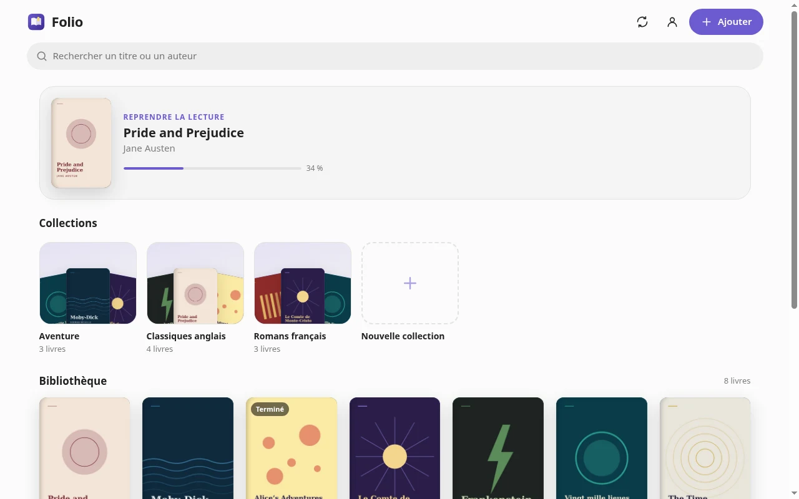
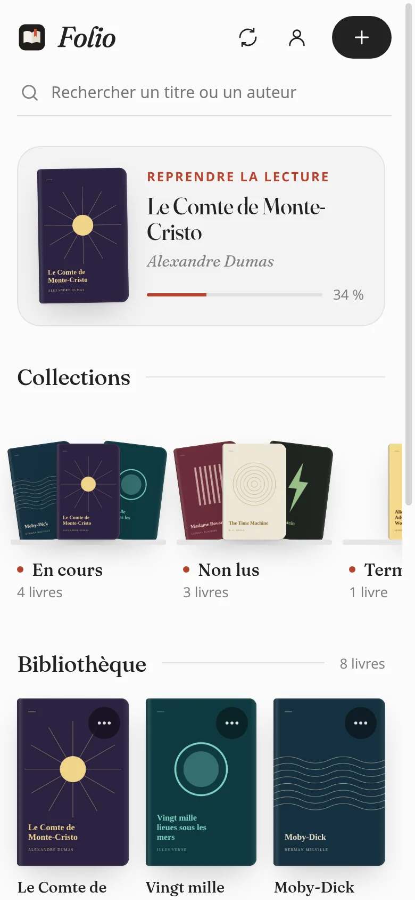
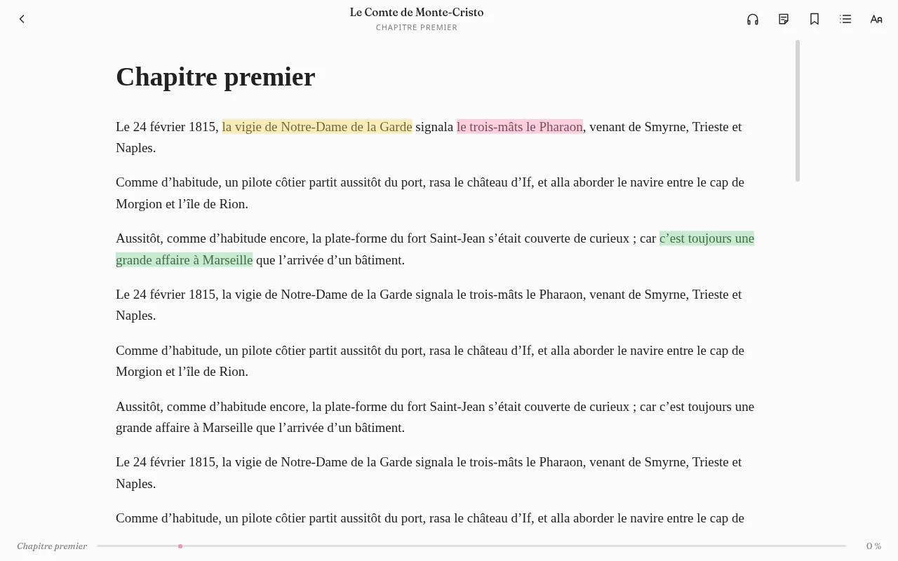
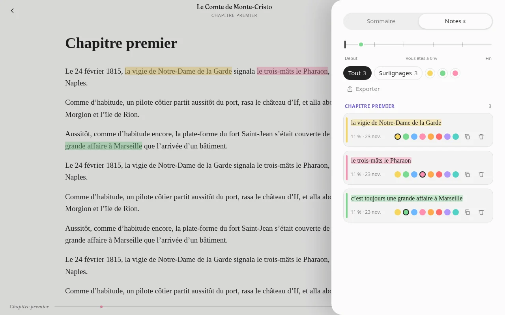

Folio est une liseuse EPUB élégante et sans publicité. Lisez dans votre navigateur, sur votre téléphone ou avec l’appli pour Windows, macOS et Linux : votre page, vos notes et vos collections vous suivent.
Gratuit · rien à installer pour commencer · fonctionne hors ligne


Une interface calme, des réglages fins et vos livres toujours à portée de main.
Commencez un chapitre sur l’ordinateur, finissez-le dans le métro : la page, les marque-pages et les surlignages se synchronisent.
Rangez vos livres par série, par genre ou par envie, et donnez-leur la couverture de votre choix — même une illustration du livre.
Quatre couleurs, une carte du livre pour retrouver vos passages, et l’export de vos citations en un clic.
Sept thèmes dont sépia et nuit, polices de lecture, taille, interligne, marges, pages ou défilement continu.
Vos livres sont stockés sur l’appareil : l’avion, le train ou la plage ne vous arrêtent pas.
Ni publicité, ni pistage, ni revente de données. Votre compte est protégé par la double authentification.
Texte centré à la bonne largeur, typographie soignée, pages qui se tournent d’un geste.

Toutes vos notes, classées par chapitre, avec leur place sur la carte du livre.

Installez l’appli sur votre ordinateur, ajoutez Folio à l’écran d’accueil de votre téléphone, ou lisez directement dans le navigateur.
Glissez un fichier EPUB dans Folio et commencez tout de suite.